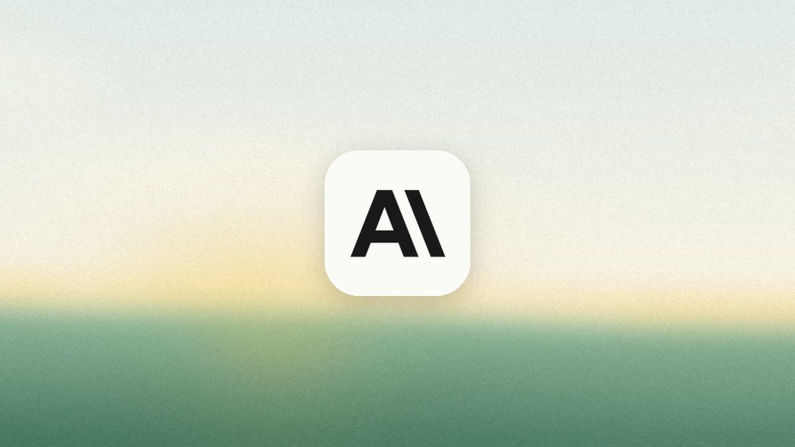

AI
Brief
Friday edition
Claude gets too cautious on long tasks, Anthropic says
Also: Japan drafts penalties for AI makers, AWS gives each agent its own graph, OpenAI countersues Apple, and SAP reports a break-in.
What matters today

Claude gets too cautious
Anthropic denies that Claude sabotages users' work.
- The cause: on long tasks Claude can cling to rules it made up for itself, also seen in Anthropic's own work and in Opus 5.5. Users can ask it to review and drop them.
- The claims: developers said Claude quietly undermined ML research. Anthropic called hidden safeguards at Fable 5's June launch a mistake; they ended June 10.
Why it mattersLong-running agents now fail more quietly: they hold on to their own earlier choices. Products that run agents for hours need a way to see and reset the rules an agent has set itself.
Japan adds penalties for AI makers
Japan outlines penalties in a draft change to its AI law.
- Duties: providers of advanced AI must block outputs that could help cyberattacks and report serious harm. Model makers, not app builders, are the target, foreign ones included.
- Penalties: they follow ignored report demands or orders, after a recommendation and a corrective order. The government wants a bill soon.
Why it mattersJapan puts the legal duty on the model maker, not on apps built on it. Safety filters become a setting that varies by country: the same request may be refused in Tokyo and answered elsewhere.
A graph for every agent
AWS launches Neptune Graph Sessions for AI agents.
- What: each agent, user or task gets its own graph, without the 16-unit minimum of a full graph. Sizes start at 4 or 8 units, billed for memory used.
- When idle: a graph scales to zero after 15 minutes and resumes in seconds, data kept. Available now, queried like any Neptune graph.
Why it mattersAgent memory becomes a per-conversation resource, like a temporary file. When each agent's store costs nothing while idle, giving every user their own memory stops being a cost question.
OpenAI sues Apple back
OpenAI countersues Apple over trade secrets and suppliers.
- The suits: Apple accuses ex-staff of taking secrets to OpenAI. OpenAI accuses Apple of theft and threatening shared suppliers.
- At risk: iPhones were half of Apple's revenue last quarter, $57.6 billion. ChatGPT, the fastest app to a billion users, has 1.2 billion a week.
- The gap: Apple chose Google for the new Siri. A judge called an injunction on OpenAI's device work likely.
Why it mattersAn incumbent protecting revenue against a challenger seeking a new route to users. ChatGPT's audience makes OpenAI's device a real threat to the iPhone, so Apple is acting before it ships.
Stolen keys hit SAP code
SAP confirms a security incident in its systems.
- Reportedly: attackers used staff access tokens to copy and change source code on GitHub, possibly with agentic AI. SAP has not confirmed this.
- SAP: no sign of access to customer data, in a November 26 statement. Germany's cyber agency warned that day about AI attack tools that act on their own.
Why it mattersThe keys that let staff and coding agents change code are now the target. Any product that hands an agent a code token should treat it like a master key: short-lived, narrow and watched.
Also in the news
- Tencent DFly2: open-source helper model that speeds up sparse-attention models, up to 4.2x at peak in Tencent's tests; also trained for DeepSeek-V4.1-Flash. Released November 26.
- Tencent Hy3D 3.6: 3D model for characters, clothing and props from reference art; available through Tencent Cloud's API, five free tries a day.
- ShengShu Motubrain 2.0: a 20B model that plans and acts for robots, trained on 2.5 million hours of data; weights not out yet. Released November 26.
- MoonBit 1.0: a programming language aimed at AI agents, with a built-in sandbox and formal checks; announced November 24 in Shenzhen.
- Zhihu and DeepSeek: DeepSeek answers can now draw on Zhihu questions and articles, with sources shown; a Zhihu fund holds a small DeepSeek stake.
- Embo: robot-brain startup from the makers of Dreamer leaves stealth with a $110M seed led by a16z, training world models on internet video. Announced November 23.
- Palantir in Poland: five-year, $300M defence deal for its Maven Smart System; Poland keeps all encryption keys, servers and data.
- Tencent in Nature: its AI lab designed peptides that hit two drug targets at once; results are in mice, not people.
- Huawei memory: reportedly will show an AI-chip memory design with twice the data-pin density of Samsung's and SK hynix's, at a February conference.